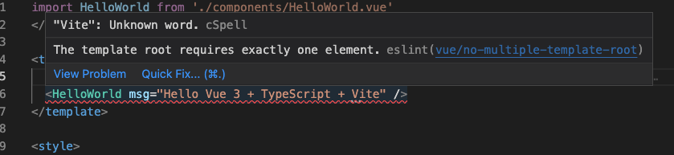
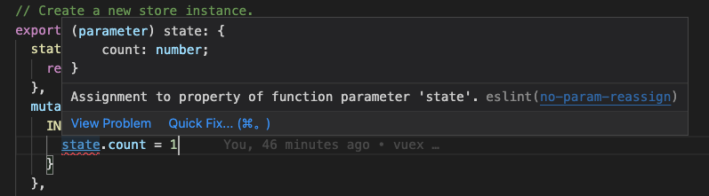

约束代码风格
解决eslint和prettierc冲突
冲突原因：
项目使用了vscode的扩展程序eslint和prettierc，并开启了保存时自动格式化和自动修复代码的功能。
1 | // .vscode/setting.json |
eslint中推荐使用单引号，与prettier配置相互冲突。解决两者冲突问题，需要用到 eslint-plugin-prettier 和 eslint-config-prettier。让eslint只负责代码质量检测而 prettier负责美化。
- eslint-plugin-prettier 将 Prettier 的规则设置到 ESLint 的规则中。
- eslint-config-prettier 关闭 ESLint 中与 Prettier 中会发生冲突的规则。
最后形成优先级：Prettier 配置规则 > ESLint 配置规则。
安装依赖并修改.eslintrc文件
1 | // 安装依赖 |
https://juejin.cn/post/7012160233061482532
vue3 eslint报错
1. 支持vue3.0中多根节点（fragements）

- 错误原因：The template root requires exactly one element.// 模板只需要一个根元素
- 解决办法： 在.eslintrc.js文件中，配置rules成功解决。
1
2
3
4
5
6module.exports = {
...,
rules: {
"vue/no-multiple-template-root": "off",// 关闭多根节点的校验
},
};
2. 配置了别名@，eslint报错Unable to resolve path to module eslint(import/no-unresolved)
1 | // vite.config.ts |
- 错误原因：airbnb有一条规则: eslint(import/no-unresolved) eslint不知道怎么解析别名路径
- 解决方法：
1
2
3
4
5
6
7
8
9
10
11
12
13
14
15
16
17
18
19
20
21
22
23// 安装 eslint-import-resolver-typescript
yarn add eslint-import-resolver-typescript -D
// .eslintrc.js.
{
...
settings: {
"import/resolver": {
typescript: {} // this loads <rootdir>/tsconfig.json to eslint
},
},
}
// tsconfig.json
{
"compilerOptions": {
...
"baseUrl": ".",
"paths": {
"@/*": ["src/*"]
}
}
}
3. 提示path模块找不到
安装一下 @types/node
4. state赋值报错：no-param-reassign

- 解决方法：
1
2
3
4
5
6
7
8
9
10
11
12
13
14module.exports = {
...
rules: {
'no-param-reassign': [
'error',
{
props: true,
ignorePropertyModificationsFor: [
'state' // for vuex state
]
}
]
},
};